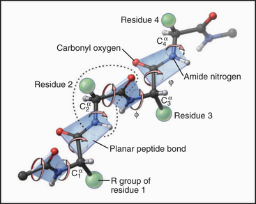

Tim Noble & Sue Webster
Tim Noble & Sue Webster
INTERACTIONS MUST BE CONSIDERED IN BOTH SIDES OF REACTION
Just because you can only every see the folded (or bound) state, doesn't mean that it's all that matters.
Amino acid sidechains are involved in many interactions
- van der Waal's (packing)
- hydrophobic effect
- hydrogen bonds
- ion pairs
- covalent bonds

Amino acids are spread out in "property space"
Any reaction involving a protein is an optimization:
- Make favorable bonds
- Prevent steric clashes
- Maximize entropy
- etc ...
$\Delta G^{\circ} = \Delta H^{\circ} - T \Delta S^{\circ}$
Peptide bonds are planes that rotate relative to one another
Key points:
- This creates repeating, alternating polar contacts
- Locking down peptide bonds makes folding way easier
- Lower entropic penalty to fold
- Smaller "search space" for chain to find folded state
Song et al. (2012) PLOSONE
Two amino acids tend to break secondary structure
- Proline
- does not have backbone amide proton to form hyrodgen bonds
- Restricted conformation breaks secondary structure
- Glycine
- Tiny sidechain allows many degrees of freedom
- Entropically unfavorable to make into an ordered structure
$\alpha$-helix
$\alpha$-helices
- Most common structural element in proteins
- Relatively rigid
- Regular pattern of nearby-in-sequence hydrogen bonds
- Lego-like on sides
$\alpha$-helices are lego-like
$\beta$-sheet
$\beta$-sheet
- Regular pattern of distant-in-sequence hydrogen bonds
- Can be either "parallel" or "anti-parallel"
- "Lego"-like on the sheet surface
Often form protein-protein interaction interfaces
Often form protein-protein interaction interfaces
$\beta$-sheets form amyloid fibers in neurological diseases
Almost any sequence can form an amyloid fiber.
- Why might most protein sequences be able to form a $\beta$-sheet?
- Amyloid fibers, once started, keep sucking in new proteins. Why might this be?
Almost any sequence can form an amyloid fiber.
- Almost any protein sequence can form a $\beta$-sheet because the sidechains point out into solvent (no steric hinderance)
- Amyloid fibers, once started, keep sucking in new proteins because they have "open-ended" edges that can hydrogen bond
Loops
Loops
- Connects other elements of secondary structure
- Relatively dynamic/floppy
- Irregular structures and hydrogen bonds
- Often have specific functional roles (lids on active sites, regulatory regions, etc.)
Loops connect $\alpha$-helices and $\beta$-sheets
Proteins are organized hierarchically from pieces of secondary structure that pack together
Discuss: why does a protein sequence take a particular structure?
Optimizes all possible interactions that can be formed by polypeptide.
Hydrogen bonds
Hydrogen bonds
Ionic bonds
Disulfide
Hydrophobic effect
Color spectrum from Nonpolar to Polar
Hydrophobic effect
Color spectrum from Nonpolar to Polar
Proteins are dynamic
$ps$ to $ns$ dynamics ($10^{-12}\ to\ 10^{-9}\ s$)
$\mu s$ to $ms$ dynamics ($10^{-6}\ to\ 10^{-3}\ s$)
Summary
- Planar peptide bond leads to repeating, opposite donors and acceptors
- These donors and acceptors form regular, repeating secondary structures
- These secondary structures pack together to assemble a full protein structure
- These structures, while ordered, are still highly dynamic
Final puzzle
Why do all of these secondary structure hydrogen bonds form if they can just as easily form with water?